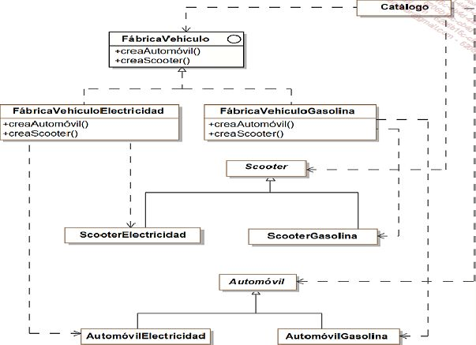

En la mayoría de los lenguajes de POO la creación de nuevos objetos de un determinado tipo se realiza con ayuda de un operador y el tipo, por ejemplo 'new Color()' en PHP.
La tarea de construcción de un objeto no siempre es sencilla. Por ejemplo, supongamos que queremos crear 3 objetos de los tipos: Monitor, Teclado y Torre. En PHP una manera de implementar la solución sería la siguiente:
class Componente{
}
class Monitor:Componente{
}
class Teclado:Componente{
}
class Torre:Componente{
}
function construyeComponente($tipo):Componente{
if($tipo=='Monitor')
return new Monitor();
elseif($tipo=='Teclado')
return new Teclado();
elseif($tipo=='Torre')
return new Torre();
return NULL;
}
$monitor = construyeComponente('Monitor');
Como se puede observar en el ejemplo anterior, no es posible instanciar el tipo de objeto a partir del parámetro de la función. Además ante cualquier cambio en la jerarquía de clases será necesario reconstruir todo el código.
Los patrones Abstract Factory, Builder, Factory Method y Prototype, nos sirven para solucionar el problema
A continuación vamos a desarrollar un ejemplo de implementación del patrón Abstract factory para la creación de distintos tipos de automóviles y scooters.
